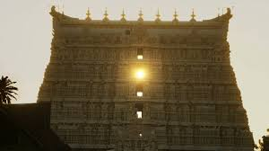

| HOME | INTRODUCTION | HINDUISIM | SCIENCE | VEDAS | CONTACT US |
Hinduism is an religion and dharma, or way of life is the world's third-largest religion, with over 1.25 billion followers, or 15–16% of the global population, known as Hindus.The word Hindu is an exonym, and while Hinduism has been called the oldest religion in the world many practitioners refer to their religion as Sanātana Dharma (Sanskrit: सनातन धर्म: "the Eternal Way"), which refers to the idea that its origins lie beyond human history, as revealed in the Hindu texts Another, though less fittingself-designation is Vaidika dharma, the 'dharma related to the Vedas.'
Hinduism, major world religion originating on the Indian subcontinent and comprising several and varied systems of philosophy, belief, and ritual.Although the name Hinduism is relatively new, having been coined by British writers in the first decades of the 19th century, it refers to a rich cumulative tradition of texts and practices, some of which date to the 2nd millennium BCE or possibly earlier. If the Indus valley civilization (3rd�2nd millennium BCE) was the earliest source of these traditions, as some scholars hold, then Hinduism is the oldest living religion on Earth. Its many sacred texts in Sanskrit and vernacular languages served as a vehicle for spreading the religion to other parts of the world, though ritual and the visual and performing arts also played a significant role in its transmission. From about the 4th century CE, Hinduism had a dominant presence in Southeast Asia, one that would last for more than 1,000 years.
One of the key thoughts of Hinduism is “atman,” or the belief in soul. This philosophy holds that living creatures have a soul, and they’re all part of the supreme soul. The goal is to achieve “moksha,” or salvation, which ends the cycle of rebirths to become part of the absolute soul.
 |

science may refer to a number of disciplines: ancient and modern, scientific, metaphysical, proto-scientific, found in or based in the Vedas.
Hindu Dharma is scientific as it is based on what can be known, intuited and experienced. There are many other proofs of Hinduism, that is a great science wherein we get all the Knowledge of Any field in sciences like Physics, Chemistry, Medicine, Astronomy, Maths, Biology etc.
कालोऽस्मि लोकक्षयकृत्प्रवृद्धो
लोकान्समाहर्तुमिह प्रवृत्त: |
ऋतेऽपि त्वां न भविष्यन्ति सर्वे
येऽवस्थिता: प्रत्यनीकेषु योधा: ||